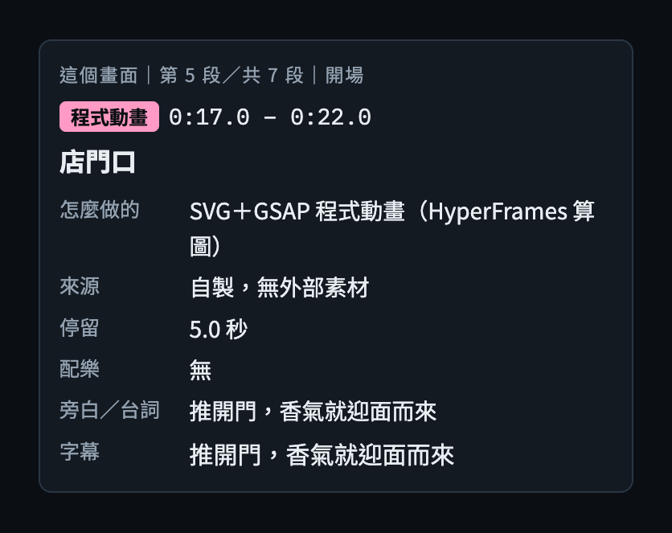
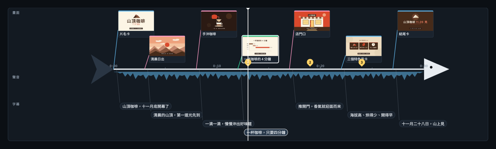
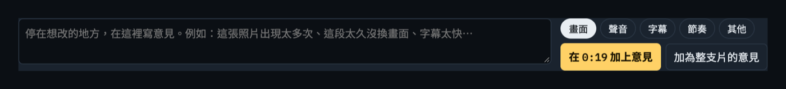
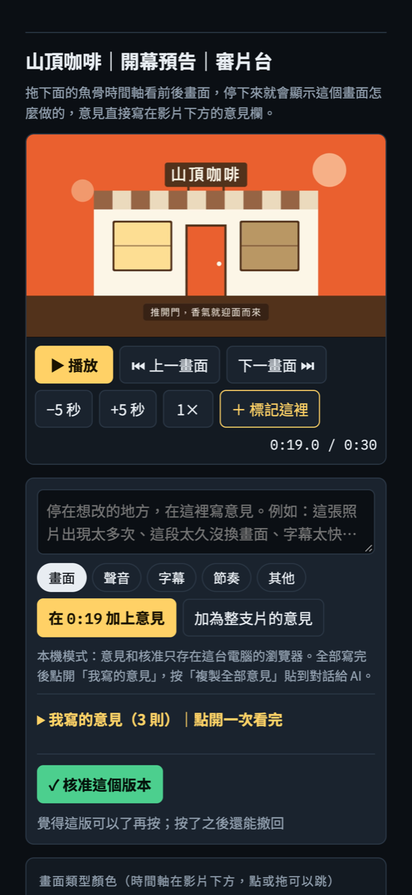
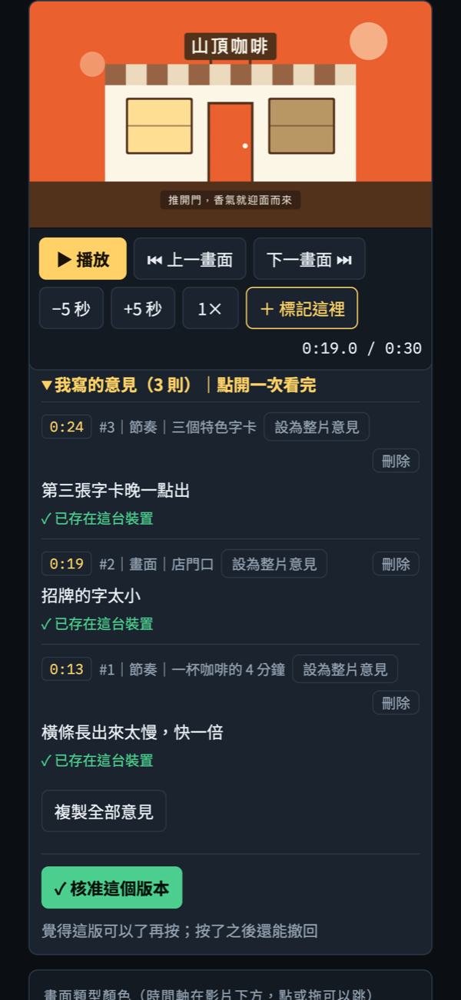
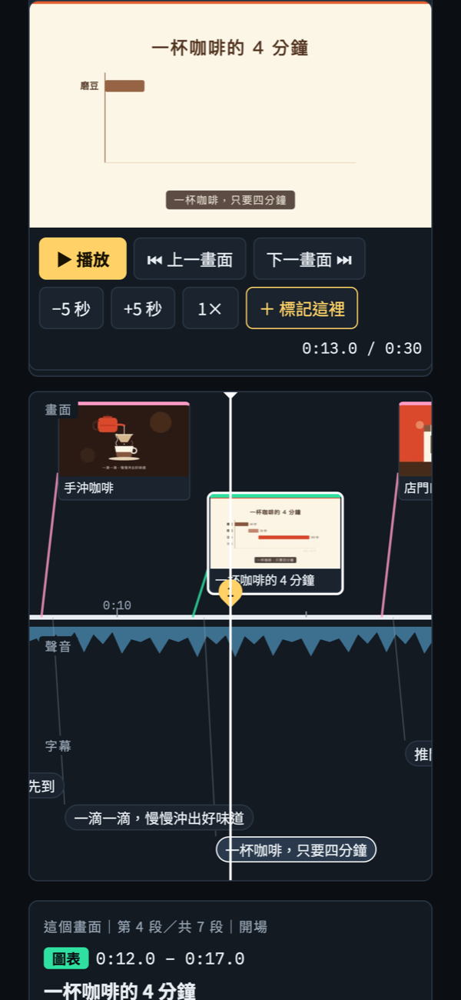

每一個鏡頭攤開來看
魚骨時間軸把整支片排成一列縮圖。停在哪一鏡，旁邊就寫這一鏡多長、怎麼做的、素材從哪來。


← 左右滑動看整條時間軸 →
審片台把一支成片攤成一條魚骨時間軸。你在畫面上寫意見，AI 收到的每一則都帶著時間、鏡頭和素材檔名。
免費、MIT 授權。片子留在你自己的電腦。

你看完 AI 做的片，回對話打了這句。它改了 1 分 20 秒的字卡，你說的是 1 分 25 秒的轉場。第二輪你把時間寫得更細，它把整段重做，原本沒問題的鏡頭也換掉了。
片子是一格一格的，對話框只有一行。
魚骨時間軸把整支片排成一列縮圖。停在哪一鏡，旁邊就寫這一鏡多長、怎麼做的、素材從哪來。


← 左右滑動看整條時間軸 →
按「＋標記這裡」，意見就釘在那一秒。打的字當下就存，重新整理也還在。


按一顆鈕，全部意見變成一份清單，每則都有時間、鏡頭名、素材檔名。AI 照清單改，沒被點到的鏡頭不動。
【v1】審片台傳來：意見 3 則；整版還沒核准。 [0:13｜鏡頭 4〈一杯咖啡的 4 分鐘〉｜自製，無外部素材] 橫條長出來太慢，快一倍 [0:19｜鏡頭 5〈店門口〉｜自製，無外部素材] 招牌的字太小 [0:24｜鏡頭 6〈三個特色字卡〉｜自製，無外部素材] 第三張字卡晚一點出
「核准這個版本」要按兩次才生效。換了新版本，舊的核准自動不算。


跟你的 AI 代理說：「裝 review-desk 這個技能。」
片子做好後說：「開審片台。」它會把成片變成一個網頁，在你的瀏覽器打開。
看片、寫意見、按「複製全部意見」，貼回對話。



這套是做兩個 YouTube 頻道時逼出來的。其中一集的第 2 版，審片的人在片上標了 10 個時間點，第 3 版照這 10 則改完。審片的人全程用手機。
把審片台放上網，傳網址給客戶。客戶用手機打開就能看片、點畫面留言、按核准，不用註冊。意見會同步回來，你的 AI 代理直接讀。這一段要自己架 Netlify，照 cloud/README.md 做。